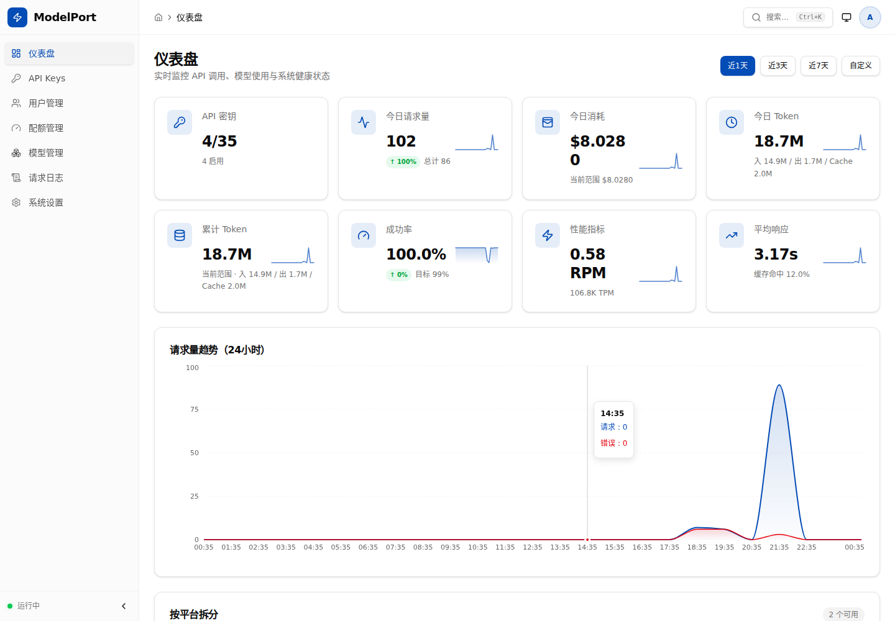
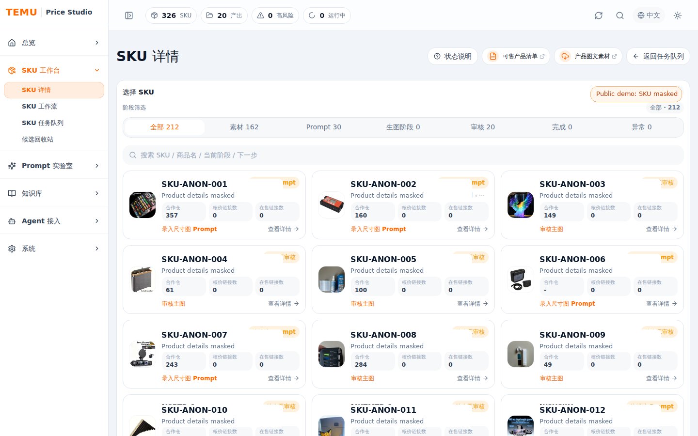
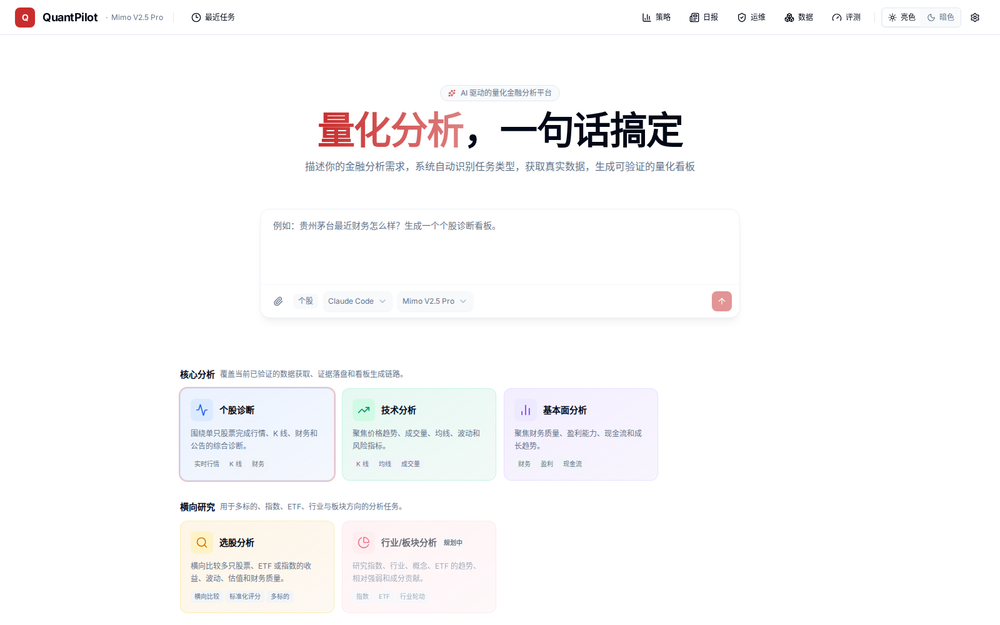
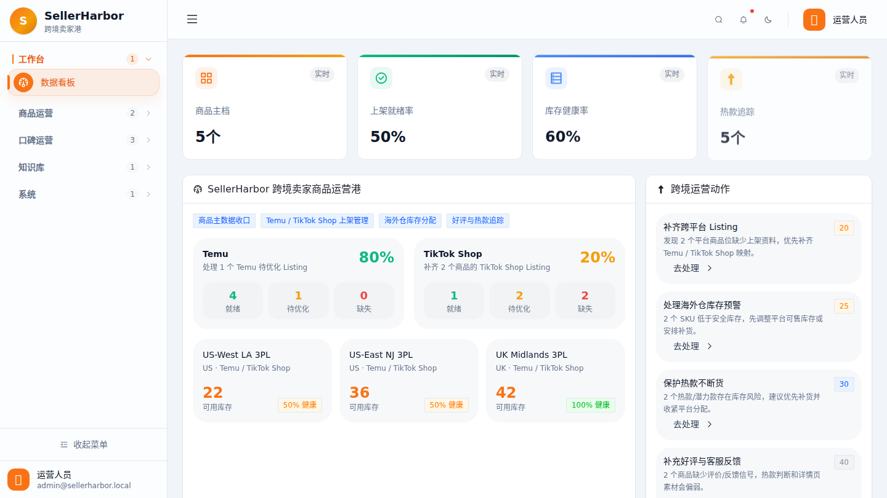
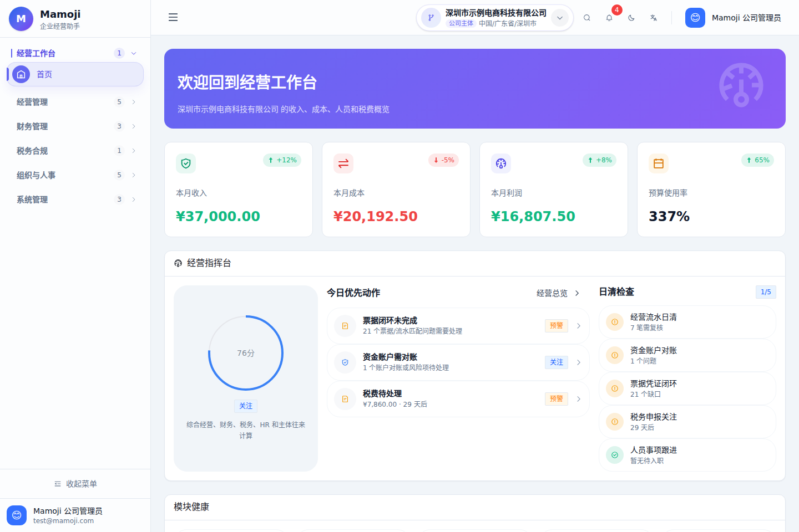
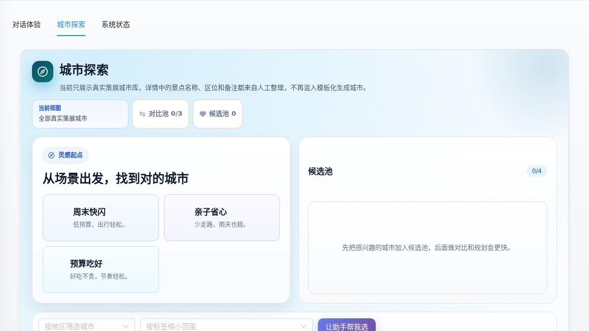

01
Open Source

ModelPort
面向 Claude Code / VS Code Claude 的本地 Anthropic-compatible 模型网关，带 Dashboard 控制面，覆盖 Provider 路由、模型库存、API Key、用量成本和健康观测。
按外部访问者最关心的方向、状态和可信度快速扫一遍。

面向 Claude Code / VS Code Claude 的本地 Anthropic-compatible 模型网关，带 Dashboard 控制面，覆盖 Provider 路由、模型库存、API Key、用量成本和健康观测。

本地优先的 Temu 核价生图工作台，串联 SKU 数据、素材证据、Prompt 版本、抽卡候选、人工审核、QA 和最终包追溯。

面向量化投研的 AI 工作台，覆盖自然语言任务、真实行情数据、策略平台、Agent Eval、Skills、日志和运维治理。

面向 Temu / TikTok Shop 跨境卖家的商品运营港，统一商品主档、平台 Listing、海外仓库存、真实反馈、内容生成和审核动作。

面向初创公司和小团队的轻量经营管理系统，统一收入、成本、预算、票据、税务、人员薪酬和生产运维。

AI 旅行路线规划工作台，围绕城市探索、北京 POI/UGC 数据、预生成路线库、预算约束、动态重规划和行程结果分享。